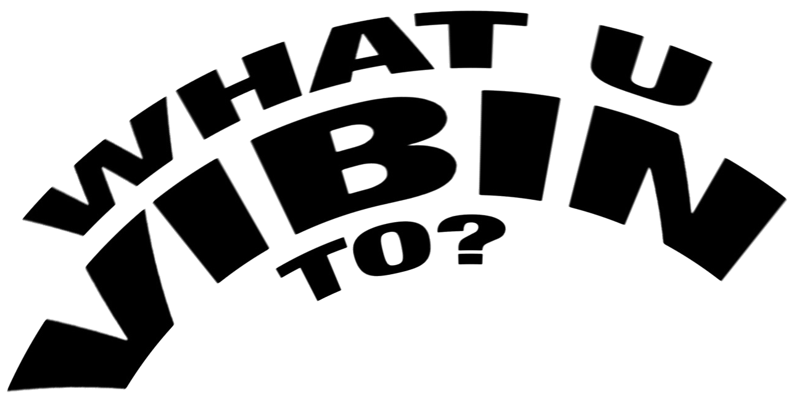

WHAT U VIBIN TO? /// WHAT U VIBIN TO? /// WHAT U VIBIN TO? /// I WANNA GO TO AMSTERDAM /// WHAT U VIBIN TO? /// WHAT U VIBIN TO? /// WHAT U VIBIN TO? /// I WANNA GO TO AMSTERDAM /// WHAT U VIBIN TO? /// WHAT U VIBIN TO? ///

About
Books
Contact
Dig for new music
Events